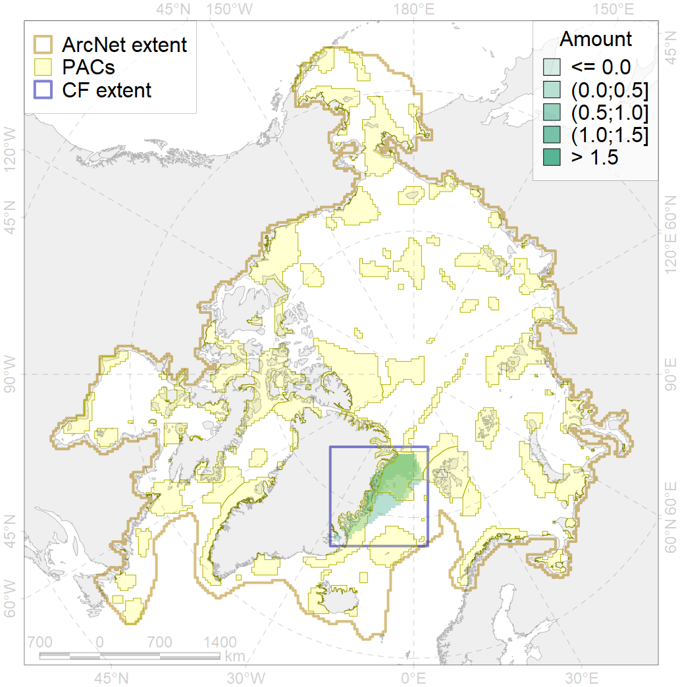
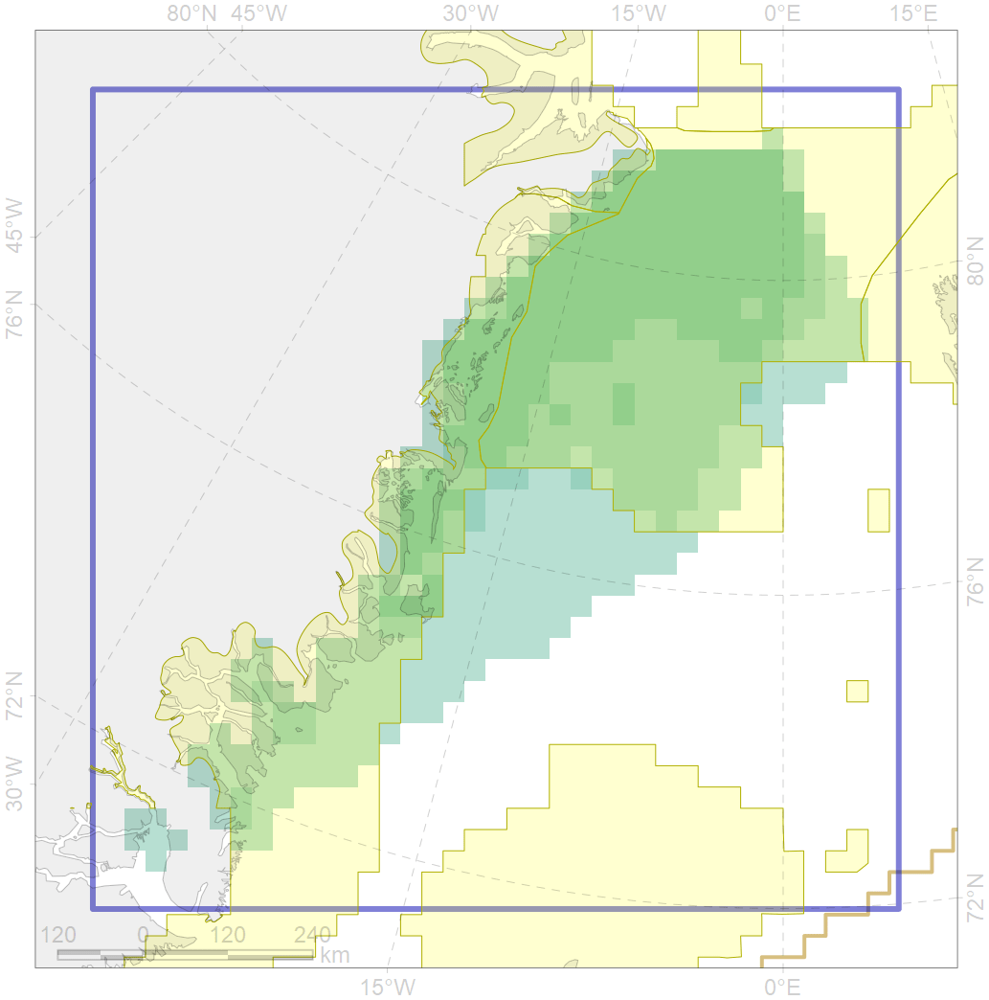

3054

| CF code | 3054 |
| CF name | Multiyear Ice distribution in September in the Greenland Sea LME |
| Time Period | 1979 - 2017, adopted for recent changes |
| Source(s) | Lavielle M. 1999. Detection of multiple changes in a sequence of dependent variables. Stochastic Processes and their Applications, 83(1): 79–102. doi:10.1016/S0304-4149(99)00023-X. |
| Seasonality | September |
| Depth Horizon | Sea level (0m) |
| Methodology | Lavielle M. 1999. Detection of multiple changes in a sequence of dependent variables. Stochastic Processes and their Applications, 83(1): 79–102. doi:10.1016/S0304-4149(99)00023-X. |
| Use Restrictions | Joined terms of data licenses, copyrights, restrictions, terms of use, disclaimers, etc. No additional terms from data contributor. |
| Author Name | Nikita Platonov |
| Notes | |
| Scenario’s Target | 0.18 |
| Target Achievement | 0.935 (Scenario: 519.6%) |
| PAC | Share of the Total Amount within the PAC | Share of the Target Achievement for the ArcNet | PAC’s Contribution to the Target Achievement |
|---|---|---|---|
| 28 | 0.0%0.0% | 0.0%0.1% | 0.0%0.0% |
| 29 | 70.0%74.8% | 381.3%407.9% | 73.4%78.5% |
| 30 | 0.0%0.0% | 0.0%0.1% | 0.0%0.0% |
| 32 | 22.2%28.4% | 121.6%155.2% | 23.4%29.9% |
| 33 | 1.6%2.5% | 8.8%13.7% | 1.7%2.6% |
| inner | 93.8%105.7% | 511.7%576.9% | 98.5%111.0% |
| outer | 6.2%8.6% | 7.9%21.4% | 1.5%4.1% |
| † supplement values are for area consistence whereas principal values are for Accenter compatible gridded stats |